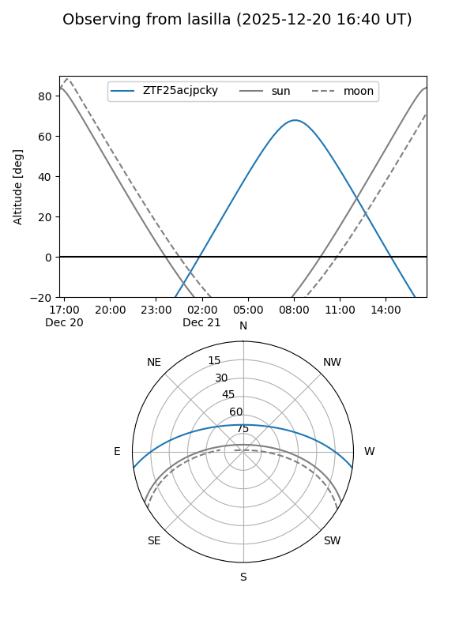
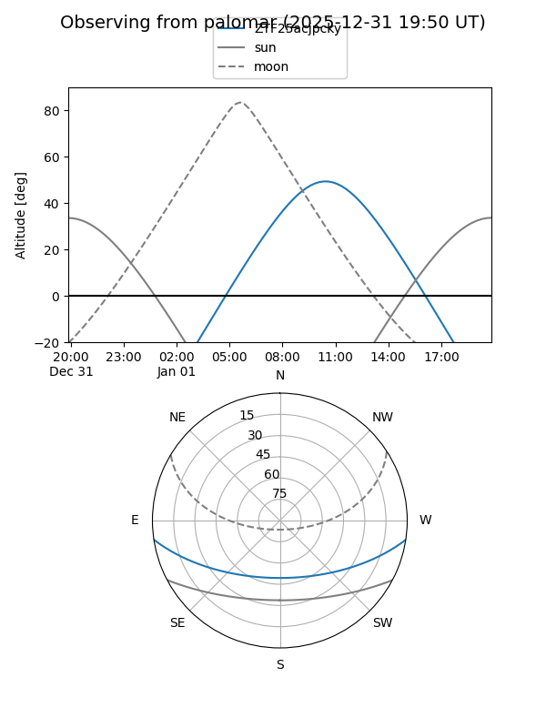

ZTF25acjpcky
Target ZTF25acjpcky at 2026-01-09 12:49
Aliases and brokers:
FINK: link
Lasair: link
ALeRCE: link
alt names
ZTF25acjpcky (ztf,fink_ztf)
Coordinates:
equatorial (ra, dec) = 140.4238,-7.12199
equatorial (HMS+DMS) = 09:21:41.71,-07:07:19.18
galactic (l, b) = (239.0825,+28.80710)
Flags:
Photometry:
last ztfg=20.76
1 ztfg detections
Lightcurve

Visibility


Additional plots